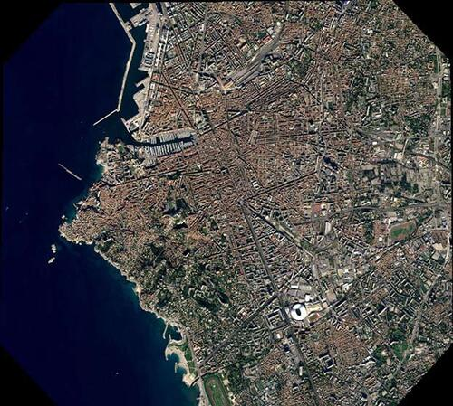
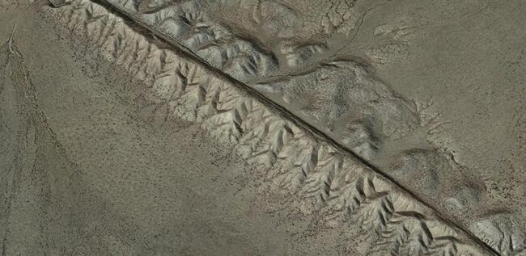
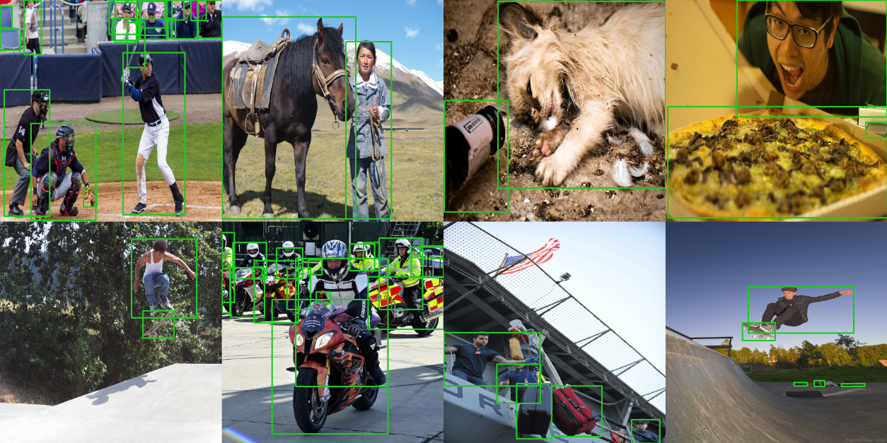
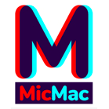
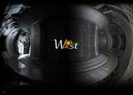

Christian
Staron
Research engineer
Christian
Staron
Ingénieur de recherche
73 avenue de Paris · 94165 Saint-Mandé CEDEX · (+33)1 43 98 62 37 ·
christian.staron@ign.fr
Member of UMR Lastig
Member of the ACTE research team
Membre de l'UMR Lastig
Membre de l'équipe ACTE
Research Interests
Sujets de recherche

Earth displacement due to seismic faults
Déplacement des sols à cause de failles sismiques

Object detection by deep learning
Détection d'objets par apprentissage profond
Experience
Expérience
Research engineer
Ingénieur de recherche
ACTE, IGN France
Je travaille à l'IGN dans le cadre d'un CDD d'un an. Le CDD est une collaboration entre le LaSTIG et l'équipe Tectonique et mécanique de la lithosphère de l'IPGP (Institut de Physique du Globe de Paris). L'IGN développe un MicMac, un suite de logiciel de photogrammétrie en accès libre. MicMac a actuellement développé une chaine de traitement permettant de calculer le déplacement 2D de pixels sur des images satellitaires au sein d'une fenêtre pré-définie. La méthode développée repose sur l'hypothèse que tous les pixels se déplacent de manière uniforme au sein d'une même fenêtre. Ceci est généralement vrai sauf lorsque l'image comporte une discontinuité. Le CDD vise à développer des méthodes capables de calculer le déplacement 2D de pixels même lorsqu'une discontinuité est présente dans l'image. Le travail s'appliquera particulièrement aux discontinuités dans le sol de la Terre liées aux failles sismiques, l'un des thème de recherche phares de l'IPGP. Le CDD est financé par le CNES grâce à un appel à projet TOSCA (Terre Océans Surface Continentale et Atmosphère).
I'm working at IGN on a one-year fixed-term contract. The contract is a collaboration between the LaSTIG and the Tectonics and Mechanics of the Lithosphere team at IPGP (Institut de Physique du Globe de Paris). IGN is developing MicMac, an open-access photogrammetry software suite. MicMac has currently developed a processing pipeline for calculating the 2D displacement of pixels on satellite images within a pre-defined window. The method developed is based on the assumption that all pixels move uniformly within the same window in the same direction. This is generally true except when the image contains a discontinuity. The fixed-term contract aims to develop methods capable of calculating the 2D displacement of pixels even when a discontinuity is present in the image. The work will be applied in particular to discontinuities in the Earth's ground linked to seismic faults, one of the IPGP's flagship research themes. The contract is financed by CNES through a call for projects TOSCA (Earth Oceans Continental Surface and Atmosphere).
Novembre 2023 - Présent
November 2023 - Today
Experience
Expérience
Past jobs and roles
Postes antérieurs
-
-
-
01-06-2020
Research engineer intern at I2M - UMR 7373
Ingénieur de recherche stagiaire à l'I2M - UMR 7373
Detection of peaks in images obtained by nuclear magnetic resonance.
Détection de pics dans des images obtenues par résonance magnétique nucléaire.
Education
Formation
École Centrale Marseille
Master 2
Traitement du Signal et des Images - Spécialité Interactions Physique Signaux Images
Faculté des Sciences - Site Marseille : Château-Gombert
Signal and Image processing - Physical signal and images interactions specialisation
Science Faculty - Marseille : Château-Gombert campus
Septembre 2020 - Septembre 2021
September 2020 - September 2021
Aix-Marseille Université
Master 1
Traitement du Signal et des Images - Spécialité Interactions Physique Signaux Images
Faculté des Sciences - Site Marseille : St-Jérôme
Signal and Image processing - Physical signal and images interactions specialisation
Science Faculty - Marseille : St-Jérôme campus
Septembre 2019 - Juin 2020
September 2019 - June 2020
Aix-Marseille Université
Licence 3
Bachelor degree - Year 3
Faculté des Sciences - Site Marseille : St-Charles
Science Faculty - Marseille : St-Charles Campus
Septembre 2018 - Juin 2019
September 2018 - June 2019
Aix-Marseille Université
Licence
Bachelor degree
Applied Mathematics and Computer Sciences to Human and Social Sciences
Mathématiques et Informatique Appliquées aux Sciences Humaines et Sociales
Faculté d'Économie Gestion - Site Aix-en-Provence : Ferry
Economics and Management Faculty - Aix-en-Provence : Ferry Campus
Septembre 2015 - Juin 2018
September 2015 - June 2018
Publications
[ACL] Journals
[ACL] Journaux
[ACLN] Journals
[ACLN] Journaux
[ASCL] Others
[ASCL] Autres
[ACTI] Conferences
[ACTI] Conférences
[ACTN] Conferences
[ACTN] Conférences
[COM] Conferences
[COM] Conférences
[OS] Books and Chapters
[OS] Livres et Chapitres
[DO] Books and Chapters
[DO] Livres et Chapitres
[AFF] Posters
[AP] Preprints
[AP] Pré-publications
[TH] Dissertations
[TH] Thèses
[INV] Invited Talks
[INV] Présentations effectuées
[PV] Popularization
[PV] Vulgarisations
Invited Talks
Présentations effectuées
Presentation at CEA's PTC (Transversal skills program) seminar (November 2022 - GRENOBLE, FRANCE)
Présentation au séminaire de Programme Transverse des Compétences du CEA (Novembre 2022 - GRENOBLE, FRANCE)
Presentation at CEA-LIST's Semi-supervised learning seminar (November 2022 - SACLAY, FRANCE)
Présentation au séminaire d'apprentissage semi-supervisé du CEA-LIST (Novembre 2022 - SACLAY, FRANCE)
Projects
Projets
On-going and past research projects
Projets de recherche passés et en cours

MicMac development
Développement de MicMac
MicMac is a free open source photogrammetry software suite.
MicMac est une suite de logiciels libre de photogrammétrie.

Automatised protection of tokamak WEST
Protection automatisée du tokamak WEST
Participation to development of an automatic processing pipeline for hot spot detection on tokamak WEST's thermal shield.
Participation au développement d'un d'un chaîne de traitement automatisée pour le traitement des points chauds présents sur le bouclier thermique du tokamak WEST.